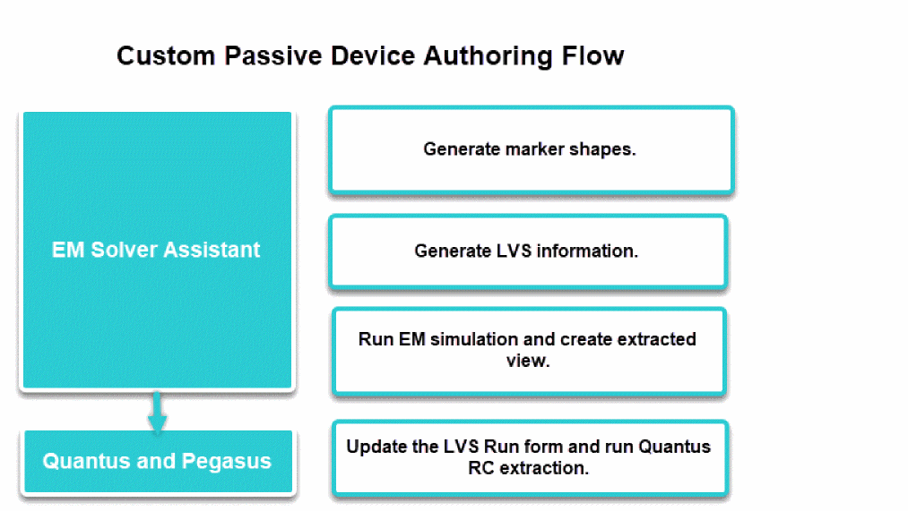
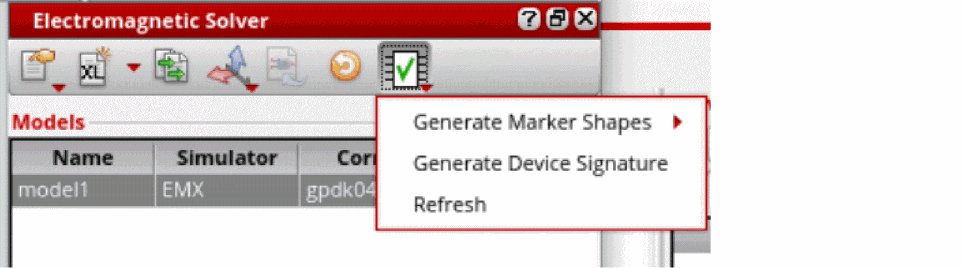
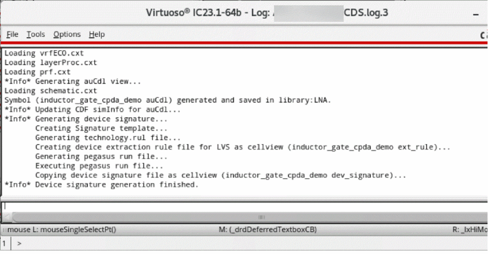

5
Authoring Custom Passive Devices
To optimize custom devices (passive devices) that are not part of the foundry process, RFIC designers need to create these devices manually in the layout. Designers can use EMX in full cellview mode to characterize the device, and create symbol and sparam views.
When the device is used in a design, the symbol is placed in the schematic and the sparam view can be selected in the Hierarchy Editor for circuit simulation. The newly created device is also required to support layout generation and physical sign-off.

To enabling custom passive device for LVS:
- Create the devices manually in the layout.
-
Open the layout in Layout MXL and set the workspace to
Electromagnetic. -
Click Device Authoring – Generate Marker Shapes from the toolbar of the Electromagnetic Solver assistant to generate marker shape over the created device by using the
device.txtfile.
A marker shape is required to cut device metal from an interconnect metal to avoid shorts and double-counting of parasitics. Such shapes can be further used for design rule checks (DRC)/Metal Fills process.
DRC are run by the DRC tool to verify whether a layout conforms to the minimum width, spacing, and other design rules established for a given fabrication process or process variation. Metal Fill allows you to generate dummy fills using foundry fill decks and automatically map generated dummy fills into the Virtuoso OA database. -
Click Device Authoring – Generate Device Signature by using the
DeviceMap.txtfile, which contains information required to generate device signature, such as recognition layer, marker layer information, pin mapping information, and context layers used in the design.
 - Generate ports.
- Run simulation and load the results.
- Create an extracted view.
Related Topics
Variables for the Custom Passive Device Authoring Flow
Return to top